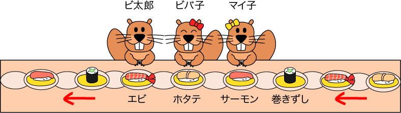

ビ太郎とビバ子とマイ子は回転寿司のお店に行きました。お客さんの前にはお皿に乗ったお寿司が流れていて，好きなお皿を取っていきます。
お寿司は「エビ」「ホタテ」「サーモン」「巻きずし」があり，この順に何度も流れてきます。

このように，3人で順番にお皿を取っていきます。
3人はお皿を1枚ずつ取ります。
取れるお皿をとばすことはありません。
マイ子が取った最初の3枚に乗っていたお寿司を順番に書くとどれになるでしょう？
| ビ太郎 | ビバ子 | マイ子 | ビ太郎 | ビバ子 | マイ子 | ビ太郎 | ビバ子 | マイ子 |
|---|---|---|---|---|---|---|---|---|
| エビ | ホタテ | サーモン | 巻き寿司 | エビ | ホタテ | サーモン | 巻き寿司 | エビ |